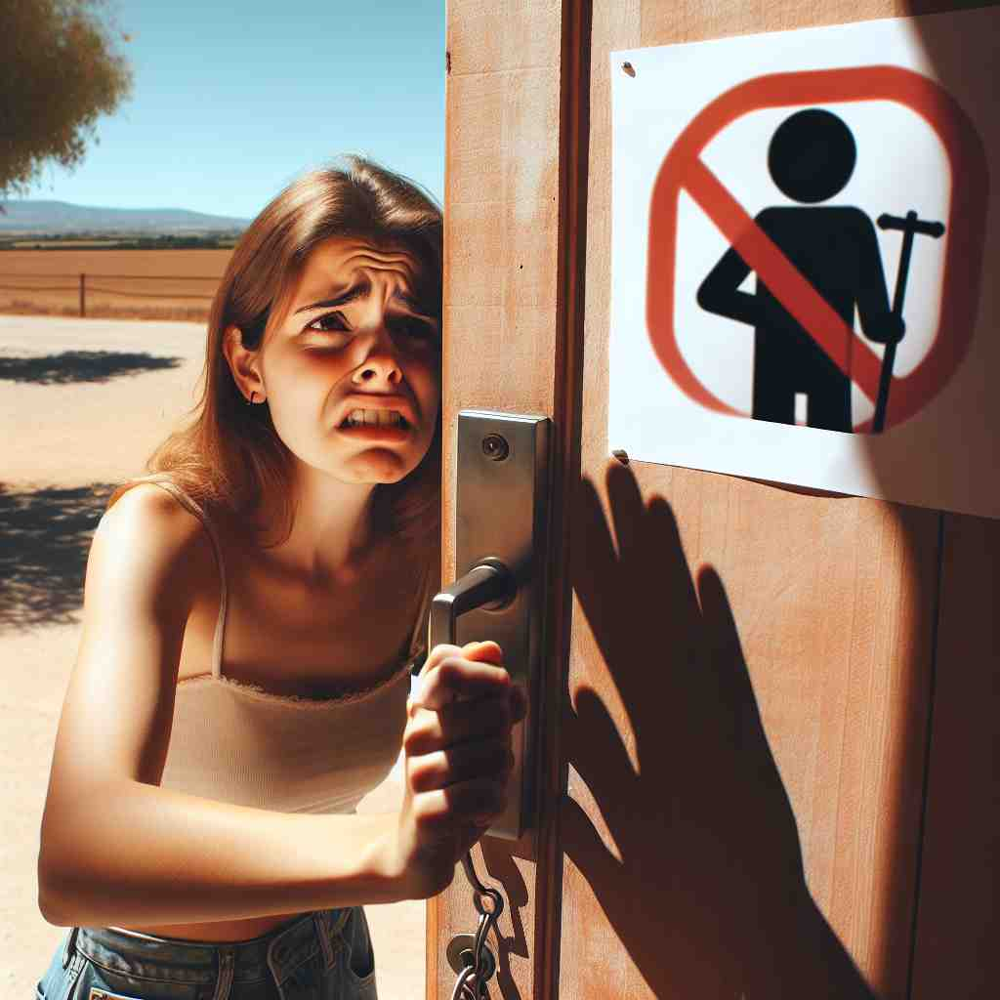

💬 She tried to discourage climbing the steep mountain. 她试图劝阻人们攀登陡峭的山。
💬 The coach doesn't want to discourage the player after a tough game. 教练不想在艰难的比赛后打击球员的积极性。

💬 The sign will discourage hiking here. 该标志会阻止在此处徒步旅行。
💬 The rain and stop sign seem to discourage someone from trying to go outside. 雨和停车标志似乎在劝阻某人尝试走出门外。
🧠 想象'discourage'是在给人泼冷水。核心含义是减少某人的信心或热情，就像泼冷水会让人退缩。无论是阻止某事发生、劝阻某人行动，还是减少某种情况的可能性，都可以理解为在不同程度上给予'泼冷水'的行为。这个形象化的比喻可以帮助你更好地理解和记忆'discourage'的各种用法。
🔈 [dɪs'kʌrɪdʒ]
🗝️ v. to make someone less confident or enthusiastic about doing something 让某人对做某事的信心或热情减少。
🎭 在一个篮球比赛的中场休息时间，一位年轻选手正沮丧地坐在长椅上。他未能进球，让他对自己的表现感到失望。教练走过来，没有表扬他的努力，而是批评他的失误。这使得选手更加气馁，提不起精神来。这一场景展示了'discourage'作为让某人信心或热情降低的含义。
💬 The high cost of tuition might discourage some students from applying to university. 高昂的学费可能会让一些学生不愿申请大学。
🌳 由前缀 "dis-"（否定）加上词根 "courage"（勇气）组成，形成动词，表示 "使气馁，阻止"。
🕸️ 1. courage: 勇气 2. encourage: 鼓励 3. discouragement: 沮丧
💡 记忆 "discourage" 时，可以将其分解为 "dis-"（否定）加上 "courage"（勇气），联想成去掉勇气的感觉，即使人丧失勇气的状态。